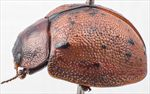
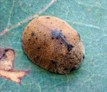
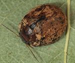
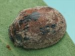
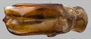
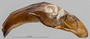
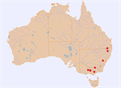

Click on images to enlarge


Male, Burgoyne Gap, Licola, Victoria


Male, Blackmans Flat, New South Wales
![Male, Mt Alexander Regional Park, Harcourt, Victoria [Geoff Walker]](assets/image/Ta167/Ta167_A19-124a_SM.jpg){kind=link}

Male, Mt Alexander Regional Park, Harcourt, Victoria [Geoff Walker]


Female, Pikedale, SE Queensland


Aedeagus, dorsal view (Burgoyne Gap, Licola, Victoria)


Aedeagus, lateral view (Burgoyne Gap, Licola, Victoria)


Distribution
Name
Trachymela spilota (Chapuis)
Reference specimen
2018-139, Burgoyne Gap, Licola, Victoria.
Adult Description
Length: ♂ 8.2–9.0 mm (n=3), ♀ 8.7–9.4 mm (n=7).
Colouration:
- Head: Mid- to dark brown with areas of black whose position and extent is variable: most commonly, the black occupies a broad band extending from eye to eye behind fronto-clypeal suture, sometimes the band is broader and includes much or even all of the clypeus, rarely, only the clypeus or a thin strip of it adjoining the labrum is black, rear of head black (only visible if head is extruded), mandibles completely black; antennomeres 1–3 light to mid-brown, 4–7 grading towards much darker brown, rarely black, 8–11 concolorous with 7.
- Pronotum: Brown, concolorous with non-black parts of head, with variable dark markings: oval maculae on either side of centre, sometimes these maculae are barely darker than surrounding area or they may be black or (rarely) absent, sometimes they are joined into a single macula, a small round dark (even black) macula in foveal areas is usually present, lateral (and sometimes, parts of anterior) margination black.
- Scutellum: Black.
- Elytra: Brown, concolorous with pronotum, with a black patch centred on elytral summit, suture between this patch and scutellum is usually bordered in black, mostly small but black and prominent verrucae are sparingly scattered across disc with the largest of these being two usually longitudinally extended verrucae set about 2/3 of distance to apex, often a line of two or three small verrucae extends from near anterior edge halfway between scutellum and humeral callus a short distance towards posterior, rarely these are joined into a continuous black ridge, humeral callus black.
- Venter & Legs: Uniformly black or very dark brown, epipleura black, rarely brown (northern specimen only).
- Cuticular Wax: Light brown, sparsely to quite densely but evenly distributed layer, making a clear contrast with the black humeral callus and verrucae.
Morphology:
- Head: Punctures quite small (pd ≈ 1.5×ef), and rather evenly and densely distributed. Antennae moderately long (AL/BL: ♂ 42–44%, ♀ 38–39%), filiform.
- Pronotum: Almost evenly curved transversely to foveal area, then noticeably, sometimes quite strongly, explanate at margins, foveal depression very shallow or absent and usually with a small, inconspicuous round callus at its centre, discal surface usually finely wrinkled with individual punctures somewhat obsolete and difficult to discern, sometimes disc is smoother and punctures more clearly impressed, then relatively fine, similar or fractionally smaller than on head, and evenly and densely distributed, becoming considerably coarser at lateral margins. Front margins join thinner lateral margins in a smoothly rounded right-angle, with lateral margin curving smoothly and gradually towards rear margin, becoming much thicker in posterior half.
- Scutellum: Surface smooth and nitid or slightly roughened, unpunctured.
- Elytra: Surface evenly curved longitudinally, though with a slight gibbous tendency around summit, curved quite evenly transversely, sometimes with a very slight explanation near margins, punctures closely and evenly distributed with convex interstices, much smaller punctures are scattered sparingly on the interstices; small raised verrucae, most with one or more small punctures, are scattered over the surface of disc with the majority round and 1–4 puncture diameters in size, at least two are considerably larger and extended longitudinally, situated about 2/3 of distance to apex and midway between suture and margin, elytral suture not carinate, posterior half of marginal area very weakly concave, surface continuous under humeral callus. Vertical extension of epipleura considerable (HCE/PW = 0.38–0.42).
- Venter: Prosternal process almost parallel-sided, sometimes narrowing anteriorly, closed anteriorly, with a very light scatter of short setae throughout, mesoventrite with a few short setae, a single seta usually present on anterior and median trochanter; front edge of metaventrite beveled, truncate.
Male Genitalia (Aedeagus):
- Dimensions: Small (LPE/BL = 25–27%).
- Dorsal view: Shaft broadening slightly from near basal sulcus then almost parallel-sided until sides diverge very slightly to widest point at about 25% of distance from apex, from where sides converge in a smoothly rounded arc, dorsal surface with a faint dorso-median channel present, dorsolateral channels long, tip protruding slightly and smoothly rounded, ostium posterior edge triangular, with apex of triangle in middle and sides formed by protruding dorsal ostial processes.
- Lateral view: Ventral surface of shaft almost evenly and lightly curved throughout its length, ventral surface straight in central section, then curved downward near apex, lightly sclerotised dorsal surface projects a short distance above the side edges, tip deflexed, flagellum straight.
Immature Stages
Unknown.
Similar species
- Ta169: Superficially very similar and sometimes occurs together with Ta167. Its scutellum is brown, not black, it lacks the black common macula at the elytral summit, and its epipleura are not black. The round verrucae of Ta169 are more elevated and thus appear more prominent than those of Ta167. The two species differ clearly in the shape and size of the aedeagus.
- Ta02: Larger specimens of this species overlap in size with Ta167. They can be difficult to distinguish – Ta02 has a denser scatter of less elevated verrucae on the elytral disc and lacks the two larger longitudinally extended verrucae towards posterior of elytra, it also usually lacks the black common macula around elytral summit. The aedeagi are similar in structure, but that of Ta167 is proportionally larger and more curved.
Notes
- Taxonomy: Ta167 is identified as Trachymela spilota (Chapuis) by comparison with photos of the spilota type specimen (in RBINS). The black markings on head and pronotum correspond almost exactly with typical Victorian specimens of Ta167, and the elytral verrucae have a similar distribution (including the two prominent post-median ones).
- Distribution & Abundance: The species occurs from Victoria to the New England Tablelands of New South Wales, but it tends to be rarely collected in the northern parts of the distribution. Host Associations: Ta167 has been collected from several Eucalyptus species. In the southern part of the range, it has been found on E. camaldulensis and E. goniocalyx. The northern NSW specimen was collected from E. nova-anglica.
- Morphological Variation: A specimen from the Blue Mountains area of New South Wales is very similar to a typical Ta167, with the anterior portion of the elytral suture broadly black, the presence of the two larger verrucae in the posterior third of elytra and the ventral surface and inner epipleural surfaces black, but its aedeagus is shorter and narrower than would be expected for a typical specimen of that size. The (two) specimens from the far north of the distribution have brown inner epipleural surfaces.
Copyright © 2026. All rights reserved.